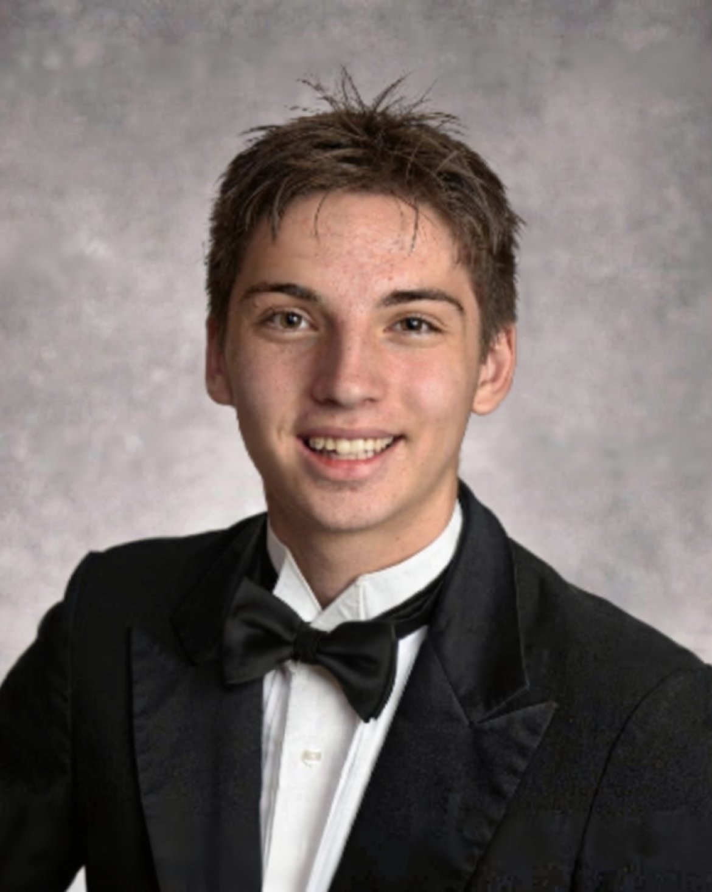

B.S. AI & Decision Making MIT '30
I work on machine learning and control for robotics. I started in FIRST Tech Challenge robotics, where I wrote odometry-based autonomous controllers and designed the mechanisms they drove, and I now do machine learning research at MIT on fisheries and aquaculture. In between, my brothers and I co-authored a paper on machine-learning-enhanced spectral sensing.